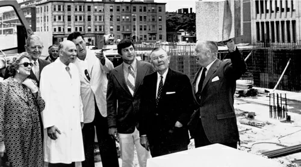

1. Farber's research has outgrown the basement
Only a few years earlier, Sidney Farber had worked in a small hospital laboratory with a handful of assistants and experimental chemicals. By the early 1950s, his cancer work was attracting more patients, staff, public attention, and money. His outpatient clinic became overcrowded, and he struggled to find adequate hospital space for children requiring treatment.
Farber's relationships with other physicians at Children's Hospital remained difficult. Many colleagues doubted his methods or found him domineering. Increasing the size of his ward within the existing hospital was not straightforward.
Farber concluded that he needed something more ambitious than a few additional rooms: a dedicated home for children with cancer. He would use his growing fundraising network to build a clinic designed specifically for them.
2. The Jimmy Fund becomes a permanent force
The Jimmy Fund had begun with a radio story and donations from ordinary listeners, but it soon developed into a durable charitable institution. Farber and Bill Koster continued organizing events with entertainers, politicians, sports teams, and local communities.
When the Boston Braves moved to Milwaukee in 1953, Farber and Koster turned to the Boston Red Sox. The baseball connection proved enormously valuable, particularly after the participation of star player Ted Williams, who had returned from service during the Korean War.
Williams became involved in events and visited children at Farber's clinic. A major fundraising dinner in his honor helped raise substantial support. Across the region, people contributed through large donations and humble projects such as community suppers, small collections, and lemonade stands.
Farber's objective was not only to collect money. He wanted to establish cancer research as a cause that would remain visible from one year to the next.
3. A new building for childhood cancer
By the early 1950s, the new clinic on Binney Street in Boston was taking shape. Mukherjee describes a modern, functional building deliberately designed to feel different from the imposing traditional hospitals nearby.
Farber paid attention to details children and families would notice. The entrance steps were carefully graded and heated to remain safer during winter snow and ice. Waiting areas included bright spaces, toys, books, and imaginative decorations. A miniature train moved through a model mountain, and colorful characters replaced the usual solemn portraits of famous professors.
The clinic felt partly like a hospital and partly like an inviting world created for children. Such design choices may seem secondary compared with chemotherapy, but they reflected an important change in medical thinking: a child with cancer remained a child, deserving play, comfort, and some protection from fear.

4. The contrast between the cheerful building and the illness
The new clinic's atmosphere could almost make visitors believe that Farber had already conquered leukemia. Children played with toys, families sat in well-lit rooms, and public fundraisers celebrated the institution's growth.
But the medical reality was much more troubling. Farber's drugs were still producing temporary remissions rather than dependable cures. Some children improved enough to play or return to school, but the cancer often came back. The healthy-looking children might owe their appearance partly to medications with dramatic physical side effects.
Mukherjee includes the observation of a visiting mother who noticed the tension between the cheerful environment and parents whose eyes showed deep fear. Children in the clinic had scars, swellings, amputations, weakness, and the effects of aggressive treatment. The happiness of the surroundings did not erase the seriousness of the disease.
5. Farber adds steroids to treatment
Farber and his colleagues continued testing new approaches. Alongside antifolates, they introduced steroids into regimens for certain leukemias. The combinations could stretch out periods of improvement for some patients, sometimes by additional months.
This was meaningful progress because even a few more months could allow a child to leave the hospital, celebrate a birthday, or spend time with family. But it did not solve the core problem. Malignant cells eventually became uncontrollable again, and many children died after exhausting the available treatments.
The chapter therefore asks us to hold two truths at once: the clinic represented real improvements in care and hope, yet the scientific goal of curing childhood leukemia remained out of reach.
6. The problem of measuring progress
A bright new hospital is visible. A fundraising total can be printed in newspapers. A photograph of a recovering child can inspire thousands. But the medical outcome that truly matters may be much harder to measure: Does treatment prolong life? Does it prevent relapse? Does it reduce suffering?
Farber had made remarkable progress in demonstrating that chemotherapy could suppress leukemia. Now the challenge was to convert that discovery into treatments that produced durable survival. The new clinic made research possible on a larger scale, but its size did not itself guarantee better results.
This returns us to a theme from Halsted's radical surgery: technical or institutional achievement should not be confused with proof of cure.
7. Why Farber refuses to stop
Even with the frequent relapses, Farber saw a different meaning in the lengthening remissions. To him, every extra period of normal life suggested that cancer might be more responsive to drugs than doctors had previously believed. The early chemicals were imperfect, but they had shown that a supposedly untreatable disease could be influenced.
He believed the next step required greater coordination, more drugs, more scientific personnel, and more money. His own new building was already becoming too small for that vision. He wanted a wider campaign, one capable of putting cancer high on the nation's political and scientific agenda.
The narrative closes with Farber feeling that the resources he had raised were still inadequate. He had outgrown the institution created through Jimmy's story and was beginning to imagine a campaign far larger than one city or one hospital.
8. The deeper meaning of Chapter 13
The chapter shows why care is more than a drug. A thoughtful environment, a child's access to play, and support for families matter even when doctors cannot cure the disease. It also shows why scientific optimism must be honest: a welcoming building may express hope, but hope should not conceal dangerous treatments or poor survival.
Farber's greatest resource was perhaps his refusal to accept that temporary remissions were the final limit of chemotherapy. He treated them as clues pointing toward what future researchers might achieve. Yet the chapter insists that the children who died must remain visible, not vanish behind publicity and impressive buildings.
Chapter takeaway: The Jimmy Fund built a home for children with cancer and gave research a public platform. But the clinic's cheerful surroundings could not eliminate the tragic reality that durable cures were still missing. Farber's next challenge was to build a campaign large enough to change that reality.
